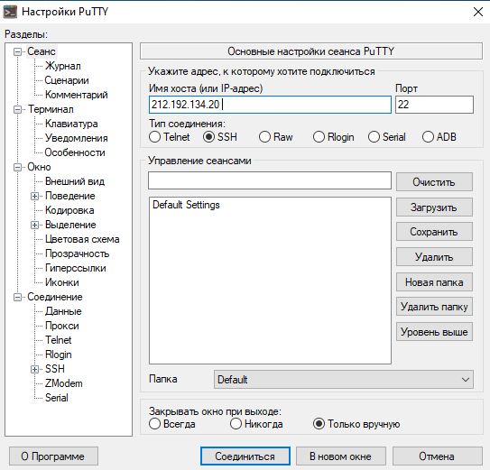

Подключаемся к Putty по порту 212.192.134.20
Команда пинг получает пакеты и подписывает, с какого IP эти пакеты получены.В нашем случае IP - 183.13.84.92

с помощью nslookup узнаем А записи и Mx записи сначала kubsu.ru, а затем kubsu-dev.ru

С помощью whois узнаем дату регистрации домена kubsu.ru и kubsu-dev.ru

С помощью Putty клонируем git-репозиторий на учебный серве по адресу /var/www/html/u54534/. Веб-страница из данного репозитория открывается по адресу http://u54534.kubsu-dev.ru/ex1/.С помощью FileZilla копируем загруженные на учебный сервер файлы к себе на локальное устройство(на скриншоте копируется на мой ПК)